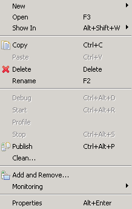
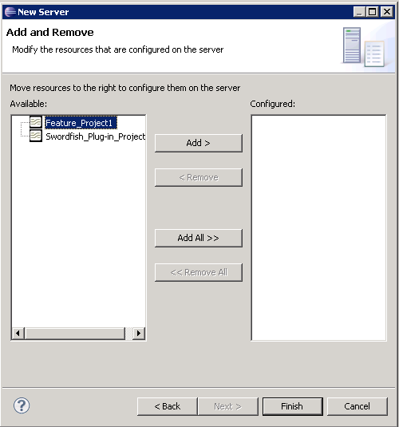

To deploy a plug-in feature project to a remote Swordfish Server:
-
In the Servers view, right-click on the Swordfish Runtime server.
The context menu opens.

-
Click Add and Remove

-
In the Add and Remove window, use the Add and
Remove buttons to move your plug-in projects from Available list
to the Configured list box.
-
Click Finish to start publishing the feature to the remote server.
When the publishing process is successfully completed a message is displayed. An error message is also
displayed if the publishing fails, for example this may occur if the connection to the server is refused or dropped.